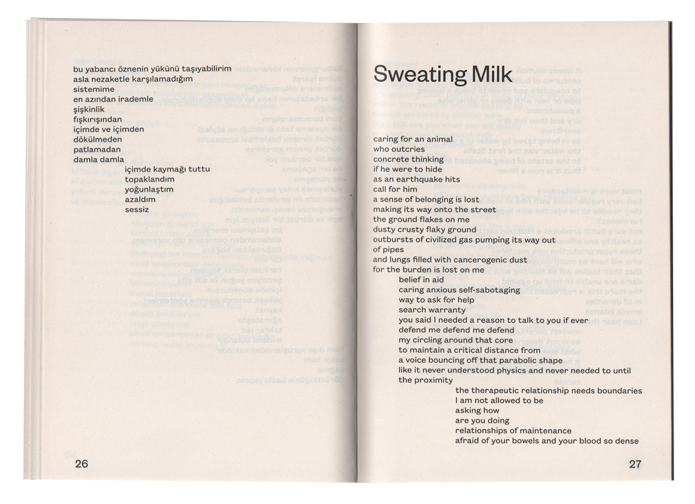
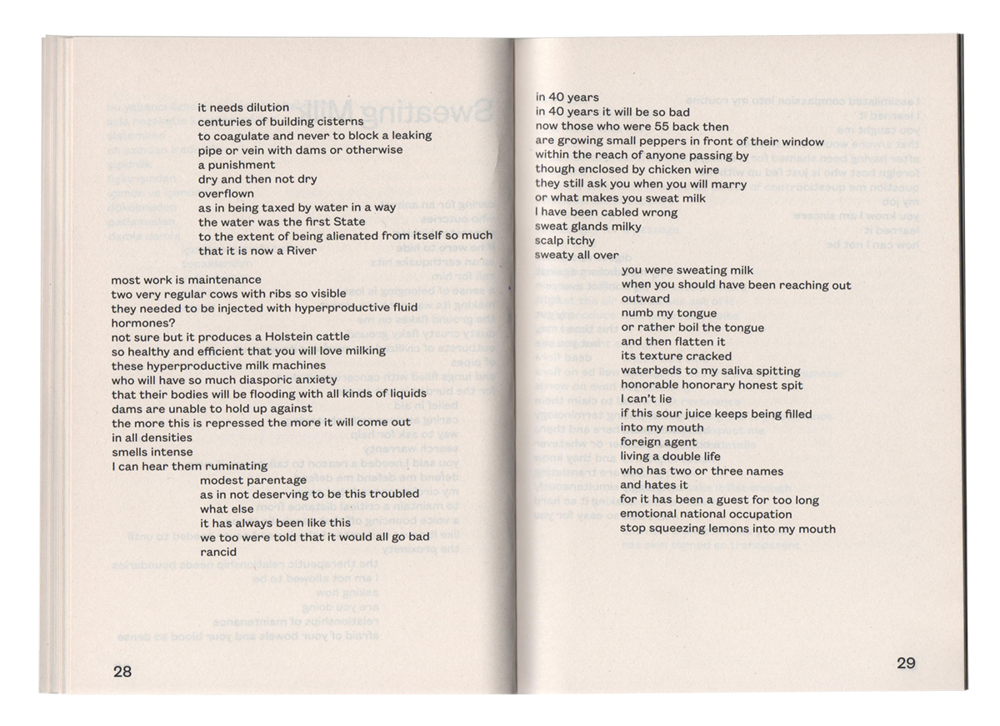
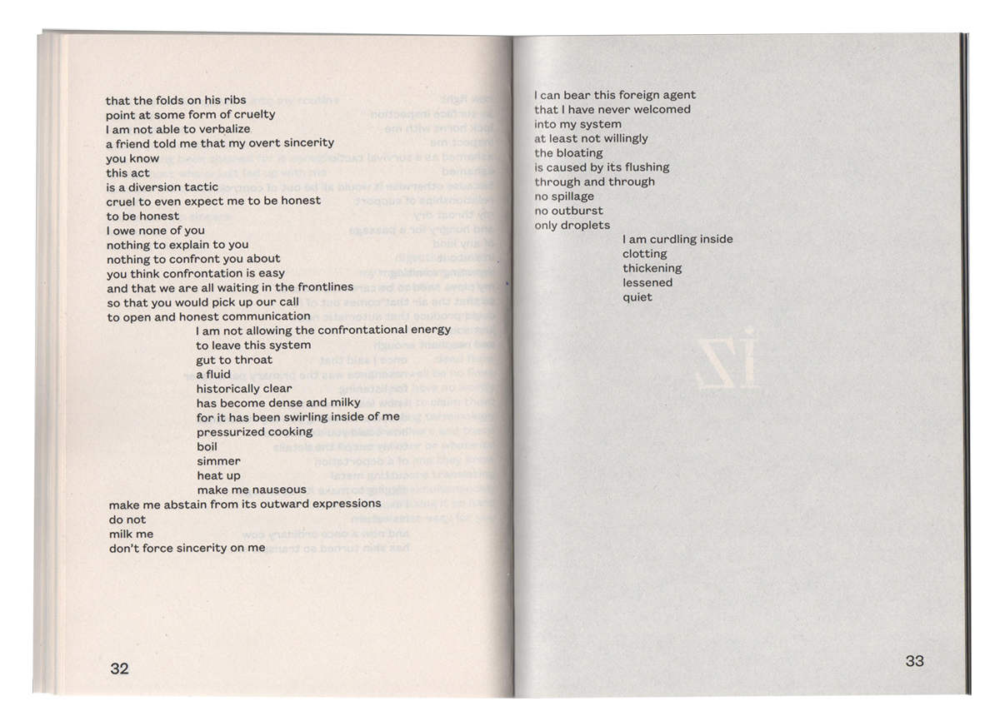

poem, 912 words
Sweating Milk was part of the book Abstract Lies (Chapter 1), which was published in parallel to Huo Rf and Abdi Cadani's exhibition with the same title, curated by Aslı Seven (September 2019, Bilsart, Istanbul).
most work is maintenance
two very regular cows with ribs so visible
they needed to be injected with hyperproductive fluid
hormones?
not sure but it produces a Holstein cattle
so healthy and efficient that you will love milking
these hyperproductive milk machines
who will have so much diasporic anxiety
that their bodies will be flooding with all kinds of liquids
dams are unable to hold up against
the more this is repressed the more it will come out
in all densities
smells intense
I can hear them ruminating
modest parentage
as in not deserving to be this troubled
what else
it has always been like this
we too were told that it would all go bad
rancid
in 40 years
in 40 years it will be so bad
now those who were 55 back then
are growing small peppers in front of their window
within the reach of anyone passing by
though enclosed by chicken wire
they still ask you when you will marry
or what makes you sweat milk
I have been cabled wrong
sweat glands milky
scalp itchy
sweaty all over
you were sweating milk
when you should have been reaching out
outward
numb my tongue
or rather boil the tongue
and then flatten it
its texture cracked
waterbeds to my saliva spitting
honorable honorary honest spit
I can’t lie
if this sour juice keeps being filled
into my mouth
foreign agent
living a double life
who has two or three names
and hates it
for it has been a guest for too long
emotional national occupation
stop squeezing lemons into my mouth